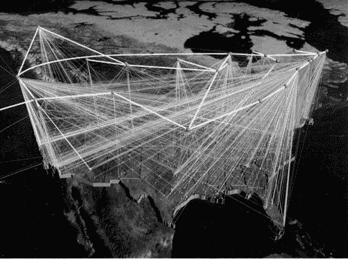

| [ Team LiB ] |
|
13.2 Requirements and QualitiesThe World Wide Web, as conceived and initially implemented at CERN, had several desirable qualities. It was portable, able to interoperate with other types of computers running the same software, and was scalable and extensible. The business goals of promoting interaction and allowing heterogeneous computing led to the quality goals of remote access, interoperability, extensibility, and scalability, which in turn led to libWWW, the original software library that supported Web-based development and a distributed client-server architecture. The realization of these properties in the original software architecture created an infrastructure that effectively supported the Web's tremendous growth (see Table 13.1). libWWW embodies strict separation of concerns and therefore works on virtually any hardware and readily accepts new protocols, new data formats, and new applications. Because it has no centralized control, the Web appears to be able to grow without bounds.
We will deal with these core requirements, and others, in more detail now, returning to the structure of libWWW later in Section 13.3. There is no explicit requirement for ease of use in the original requirements, and it was not until the development of point-and-click browsers that the Web began its tremendous growth. On the other hand, the requirement for portability and the heterogeneous computing environment led to the introduction of the browser as a separate element, thereby fostering the development of more sophisticated browsers. THE ORIGINAL REQUIREMENTSThe initial set of requirements for the Web, as established in the original project proposals, were as follows:
In addition to these requirements, there were a number of nonrequirements identified. For example, copyright enforcement and data security were explicitly mentioned as requirements that the original project would not deal with. The Web, as initially conceived, was to be a public medium. Also, the original proposal explicitly noted that users should not have to use any particular markup format. Other criteria and features that were common in proposals for hypertext systems at the time but that were missing from the Web proposal are as follows:
Although many of the original requirements formed the essence of what the Web is today, several were not realized, were only partially realized, or their impact was dramatically underestimated. For example, data analysis, live links, and private link capabilities are still relatively crude to this day. These requirements have gone largely unfulfilled. Adaptation and selective postponement of requirements are characteristic of unprecedented systems. Requirements are often lists of desirable characteristics, and in unprecedented systems the tradeoffs required to realize these requirements are often unknown until a design exists. In the process of making the tradeoffs, some requirements become more important and others less so. The effect of one of the requirements turned out to have been greatly underestimated. Namely, the "bells and whistles" of graphics dominate much of today's Web traffic. Graphics today carry the bulk of the interest and consume the bulk of the Internet traffic generated by the Web. And yet Berners-Lee and CERN management did not concern themselves with graphics in the initial proposal, and the initial Web browser was line oriented. Similarly, the original proposal eschewed any interest in multimedia research for supporting sound and video. Some nonrequirements, as the ABC has been traversed, have also become requirements. Security, for one, has proven to be a substantial issue, particularly as the Web has become increasingly dominated by commercial traffic. The security issue is large and complex, given the distributed, decentralized form of the Internet. Security is difficult to ensure when protected access to private data cannot be guaranteed—the Web opens a window onto your computer, and some uninvited guests are sure to crawl through. This has become even more relevant in recent years as e-commerce has begun to drive the structure and direction of the Web and a large number of ad hoc mechanisms have been created to facilitate it. The most obvious is simple encryption of sensitive data, typically via SSL (Secure Sockets Layer), seen in Web browsers as HTTPS (HyperText Transfer Protocol Secure). But this protocol only decreases the likelihood of others snooping on your private data while it is being transmitted over a public network. Other solutions—such as Microsoft's Passport—have you prove that you are who you say you are. (Chapter 4 discussed the various aspects of security, and Chapter 5 presented a set of tactics to achieve it.) REQUIREMENTS COME AND GONo one could have foreseen the tremendous growth of the Web, or of the Internet, over the past few years. According to recent statistics, the Web has been doubling in size every three to six months, from about 130 sites in mid-1993 to more than 230,000 sites in mid-1996 to 27 million in early 2001 (see Table 13.1). Figure 13.2 shows how the base communication paths for the Internet blanket the United States. Similarly, the number of Internet hosts—at least as counted by registered Internet Protocol (IP) addresses—grew from 1.3 million in 1993 to 9.5 million in early 1996. Figure 13.2. Internet backbones in the United States.Copyright 1996 by Donna Cox and Robert Patterson; produced at the National Center for Supercomputing Applications, University of Illinois at Urbana-Champaign. Used with permission.  Both the Web and the Internet have grown, but the Web has grown much faster as a whole. This can be seen in the final column of Table 13.1, where we see that the ratio of Internet hosts to Web servers keeps decreasing. This means that an ever-greater proportion of Internet hosts are becoming Web servers. In addition to its enormous growth, the nature of the Web has changed, as indicated by the third column of Table 13.1. Although its beginnings were in the research community, it is increasingly dominated by commercial traffic (as indicated by Internet hosts whose names end in ".com"). The percentage of .com sites has leveled out at around 55%, but this is due mainly to the rise of other domains, such as .net and .biz, rather than to any decline in commercial activity. The advent of easy, widespread access to the Web has had an interesting side effect. Easy access to graphics in a distributed, largely uncontrolled fashion has spawned the "cyberporn" industry, which has led to a new requirement: that content be labeled and access to content be controllable. The result is the platform for Internet content selection (PICS) specification, an industry-wide set of principles, and vendor implementations of them, that allows the labeling of content and flexible selection criteria. In this way, content producers are not limited in what they provide, but content consumers can tailor what they view or what they permit others to view according to their own tastes and criteria. For example, a parent can prevent a child from viewing movies other than those suitably rated, and an employer can prevent an employee from accessing non-business-related sites during business hours. To see how far and how fast the Web has diverged from its original concept, imagine that Berners-Lee had proposed a requirement for restriction of content to prevent children from accessing pornography. The management of CERN would have tossed out his proposal without discussion. We return to this point about changing stakeholder concerns when we revisit the ABC for the WWW in Section 13.5. |
||||||||||||||||||||||||||||||||||||||||||||||||||||||||
| [ Team LiB ] |
|